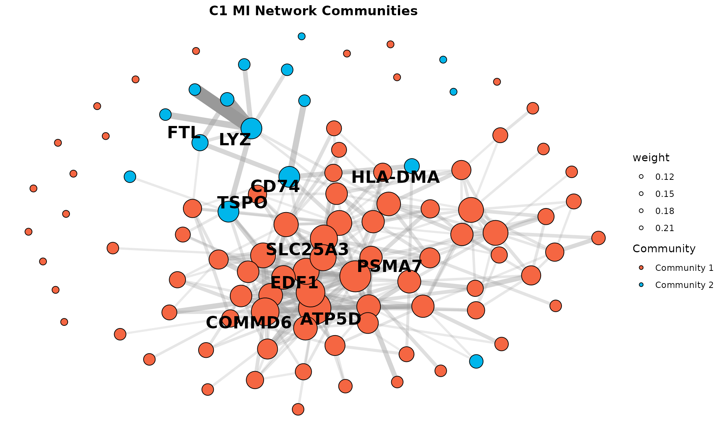

MI Network and Hypergraph Analysis with miEdgeR
mi_network_hypergraph.RmdAbout this vignette
This walkthrough demonstrates how to build mutual-information (MI) networks and hypergraphs from single-cell RNA-seq data using miEdgeR. We extract cluster-specific gene expression, compute pairwise MI, refine networks through percolation and community detection, and finally assemble and visualize a hypergraph of gene modules.
Prerequisites:
R (≥ 4.2.0)
Seurat object with clustering metadata (eg. RNA_snn_res.0.1) and optional pseudotime
Packages: miEdgeR, Seurat, igraph, hypergraph, dplyr, ggplot2, ggraph, flextable
Introduction
This vignette walks through the key steps of MI network construction and higher-order hypergraph analysis. Starting with a Seurat object we show how to filter for highly variable genes, compute and threshold MI, remove noise with percolation, detect communities, and finally represent those communities as hyperedges.
Load Libraries and Data
We load all necessary packages and read in the preprocessed Seurat object. Ensure your object contains a clustering column (RNA_snn_res.0.1 in seurat demo pbmc3K data) corresponding to cluster IDs.
Data exploration
Exploring the preprocessed pbmc3k data. For this tutorial we will focus on CD14+ Mono cluster “1”
DimPlot(seurat_obj, reduction = 'umap')Building a Mutual-Information Network
Here we call compute_mi_network(), which under the
hood:
- Extracts expression for cluster “1” (up to 1,500 cells; genes >
5% of cells).
- Filters to the top 3,000 most variable genes (after removing
housekeeping genes).
- Discretizes expression (adaptive binning) and computes pairwise MI
in parallel.
- Constructs an undirected igraph object by thresholding at the 95th percentile of MI values.
You can adjust percentile (e.g. 0.90 for more liberal
edges) or supply fixed_threshold for absolute MI
cutoffs.
Note: computing mi-network can be computationally demanding. We strongly advice to limit the number of cells and genes to the most variable ones
result <- compute_mi_network(
seurat_obj,
cluster_id = "1",
cluster_field = "RNA_snn_res.0.1",
assay_name = "RNA",
counts_layer = "counts",
data_layer = "data",
min_expr_pct = 0.05,
top_n_genes = 3000,
n_cores = parallel::detectCores() - 5
)## Using adaptive nbins = 9
mi_matrix <- result$mi_matrix
graph_percentile <- build_mi_graph(mi_matrix,
threshold_method = "percentile",
percentile = 0.95)
cat("Vertices:", vcount(graph_percentile), "\n")## Vertices: 2911## Edges: 211804
cat("Density:", graph.density(graph_percentile), "\n")## Density: 0.05000679The resulting MI matrix was filtered using the 95th percentile
threshold with build_mi_graph(), producing a graph with
2911 genes (nodes), 211,804 edges, and a density of ~0.05. This
indicates substantial gene-gene co-dependence within the cluster.
Consensus Edges via Percolation
Real-world networks can be noisy. We apply a simple “percolation” strategy:
-
Pre-filter: Keep only the top 5% of edges by
weight.
-
Resample 100 times, each time retaining 60% of
edges at random.
- Consensus: Edges appearing in ≥ 50% of iterations are considered stable.
This yields a consensus graph that filters out spurious edges.
g_consensus <- percolate_graph(graph_percentile, n_iterations = 100,
edge_fraction = 0.6, freq_threshold = 0.5,
percentile = 0.95)
set.seed(123)
lc_comm <- cluster_label_prop(g_consensus, weights = E(g_consensus)$weight)
lc_groups <- split(V(g_consensus)$name, membership(lc_comm))
lc_groups <- Filter(function(x) length(x) >= 10, lc_groups)
# Neighborhood overlap
adj_matrix <- as_adjacency_matrix(g_consensus, attr = "weight", sparse = FALSE)
overlap_threshold <- 0.1
for (node in V(g_consensus)$name) {
idx <- which(V(g_consensus)$name == node)
neighbors <- V(g_consensus)$name[adj_matrix[idx, ] > 0]
if (length(neighbors) == 0) next
for (i in seq_along(lc_groups)) {
comm_genes <- lc_groups[[i]]
ov <- length(intersect(neighbors, comm_genes)) / length(neighbors)
if (ov >= overlap_threshold && !(node %in% comm_genes)) {
lc_groups[[i]] <- c(comm_genes, node)
}
}
}
large_communities <- lc_groups
cat("Communities (size >= 10):", length(large_communities), "\n")## Communities (size >= 10): 2## Sizes: 571 93Community detection was performed with label propagation
(cluster_label_prop()), yielding two robust gene
communities (sizes: 571 and 93). A neighborhood overlap step further
enriched communities by including strongly connected neighboring
genes.
Clustering coefficient
Compute additional network metrics for the consensus graph.
clustering_coeff <- transitivity(g_consensus, type = "global")
cat("Global clustering coefficient:", clustering_coeff, "\n")## Global clustering coefficient: 0.3873887
# Centrality measures (degree, betweenness, closeness)
degree_centrality <- degree(g_consensus)
betweenness_centrality <- betweenness(g_consensus)
closeness_centrality <- closeness(g_consensus)
# Top 5 genes by each centrality measure
top_degree <- names(sort(degree_centrality, decreasing = TRUE))[1:10]
top_betweenness <- names(sort(betweenness_centrality, decreasing = TRUE))[1:10]
top_closeness <- names(sort(closeness_centrality, decreasing = TRUE))[1:10]
# Create a summary table
centrality_table <- data.frame(
Metric = c("Degree", "Betweenness", "Closeness"),
Top_Genes = c(
paste(top_degree, collapse = ", "),
paste(top_betweenness, collapse = ", "),
paste(top_closeness, collapse = ", ")
),
stringsAsFactors = FALSE
)
ft_centrality <- flextable::flextable(centrality_table) %>%
flextable::autofit() %>%
flextable::set_header_labels(Metric = "Centrality Metric", Top_Genes = "Top 5 Genes") %>%
flextable::bg(part = "header", bg = "gray") %>%
flextable::theme_vanilla()
ft_centralityCentrality Metric |
Top 5 Genes |
|---|---|
Degree |
ATP5D, PSMA7, NEDD8, COPE, C19orf43, C11orf31, LSP1, UQCR11.1, ATP6V1F, EIF3G |
Betweenness |
S100A8, NEDD8, ATP5D, LDHA, LYZ, BRK1, COPE, HIGD2A, LAMTOR1, BST2 |
Closeness |
ATP5D, NEDD8, PSMA7, C19orf43, LSP1, COPE, TALDO1, UQCR11.1, ITGB2, AP2S1 |
We assessed the topology of the consensus MI network using global
clustering coefficient (transitivity()), which was
moderately high, indicating local gene co-regulation. Centrality
analysis identified key genes based on degree, betweenness, and
closeness, highlighting potential regulatory hubs such as
ATP5D, NEDD8, and
COPE. These central genes may play critical roles in
cluster-specific transcriptional programs.
Network Visualization
Visualize a subset of the MI network. Nodes are colored by community, and top hub genes per community are labeled. The plot highlights distinct gene modules with highly connected core genes such as ATP5D, PSMA7, and LYZ.
plot_mi_network(g_consensus, large_communities, title = "C1 MI Network Communities")
Hypergraph Visualization
To visualize overlapping gene communities, we constructed a hypergraph where genes are connected to their assigned communities. Overlapping genes (shared across communities) are highlighted in red, community nodes in green, and unique genes in blue. This representation captures complex gene sharing across modules, emphasizing central roles for genes like LYZ, GSTP1, and various MHC class genes.
plot_hypergraph(large_communities, comm_indices = c(1, 2),
title = "C1 Hypergraph with Overlapping Communities")## Overlapping genes: 92
## Shared genes: CD52, CD99, CEBPB, CFL1, CTSC, FTL, GRN, HLA-DRA, IFITM2, IFITM3, LY6E, MS4A6A, NAP1L1, PTPN6, S100A4, S100A6, S100A8, S100A9, SOD1, STXBP2, TIMP1, TUBA1B, TYROBP, UBC, VIM, YBX1, ARPC1B, VPS28, CST3, HLA-DMB, HLA-DQA2, HLA-DQB1, PSAP, ODF3B, ABI3, PSMB6, GNB2L1, NACA, ADA, IFITM1, NAAA, FOLR3, NCF1, CYTIP, EEF1D, CAPZA2, CSF3R, EVL, MNDA, MPC1, RBP7, S100A12, SRA1, WSB1, AIF1, ATP5G2, CD14, COTL1, CTSS, FCER1G, FCGR3A, FCN1, GPX1, GSTP1, HLA-A, HLA-B, LGALS2, LST1, LYZ, MALAT1, MS4A7, MT-ND2, NEAT1, RHOC, RP11-290F20.3, SAT1, B2M, FTH1, S100A11, ARPC2, PFN1, TMSB10, CD79B, CDKN1C, CKB, CTSL, HES4, SIGLEC10, ALDH2, HLA-C, VCAN, MT-ND4Community Sizes
Visualize community sizes.
comm_sizes_df <- data.frame(
Community = paste("Community", seq_along(sapply(large_communities, length))),
Size = sapply(large_communities, length)
)
p_comm_sizes <- ggplot(comm_sizes_df, aes(x = Community, y = Size, fill = Community)) +
geom_bar(stat = "identity") +
labs(title = "Community Sizes (C1)", x = "Community", y = "Size") +
theme_minimal() +
theme(legend.position = "none")
print(p_comm_sizes)Hub Genes Table from Full Graph
Generate a table of top hub genes (by degree) for each community using the full graph.
summarize_hub_genes(graph_percentile, large_communities, cluster_name = "C1")Cluster |
Community |
Top Hub Genes |
|---|---|---|
C1 |
Community 1 |
S100A8, HLA-DPA1, ATP5D, C19orf43, HNRNPA2B1, TALDO1, PSMA7, NPM1, EIF3K, NDUFA11 |
Community 2 |
S100A8, S100A9, IFITM2, LYZ, GPX1, YBX1, LST1, IFITM3, LGALS2, CEBPB |
We identified top hub genes within each community by ranking nodes
based on degree centrality. Using summarize_hub_genes(), we
extracted key genes likely involved in core regulatory processes. For
example, S100A8, ATP5D, and
HLA-DPA1 emerged as central in Community 1, while
S100A9, LYZ, and
IFITM2 were prominent in Community 2. These hubs may
serve as key functional markers or regulatory nodes in the cluster.
Hub Genes
Identify top hub genes for communities from percolated graph.
summarize_hub_genes(g_consensus, large_communities, cluster_name = "C1")Cluster |
Community |
Top Hub Genes |
|---|---|---|
C1 |
Community 1 |
ATP5D, PSMA7, NEDD8, COPE, C19orf43, C11orf31, LSP1, UQCR11.1, ATP6V1F, EIF3G |
Community 2 |
S100A8, LYZ, S100A9, IFITM2, FCGR3A, LST1, FCER1G, GPX1, AIF1, LGALS2 |
GO Enrichment Analysis
Perform enrichment for communities after filtering of housekeeping genes which tend to be over-represented due to their high mi-scores
# Perform enrichment
enrich_results <- enrich_go(large_communities, ontology = "BP")## Community 1 - Genes after filtering: 571
## Community 2 - Genes after filtering: 93
## Enrichment for Community 1 :
## ID Description
## GO:0019882 GO:0019882 antigen processing and presentation
## GO:0042773 GO:0042773 ATP synthesis coupled electron transport
## GO:0042775 GO:0042775 mitochondrial ATP synthesis coupled electron transport
## GO:0046034 GO:0046034 ATP metabolic process
## GeneRatio BgRatio pvalue p.adjust qvalue
## GO:0019882 29/499 107/18800 1.587947e-21 5.355040e-18 3.867563e-18
## GO:0042773 27/499 92/18800 3.905937e-21 5.355040e-18 3.867563e-18
## GO:0042775 27/499 92/18800 3.905937e-21 5.355040e-18 3.867563e-18
## GO:0046034 40/499 273/18800 1.128641e-18 3.094734e-16 2.235105e-16
## geneID
## GO:0019882 CD68/CD74/CTSD/CTSH/FGL2/HLA-DMA/HLA-DPA1/HLA-DPB1/HLA-DQA1/HLA-DRA/HLA-DRB1/HLA-DRB5/HLA-E/IFI30/PSMB8/PSME1/PYCARD/HLA-DMB/HLA-DQA2/HLA-DQB1/LILRB2/CALR/CTSS/FCER1G/HLA-A/HLA-B/B2M/CTSL/HLA-C
## GO:0042773 BID/CHCHD2/COX5A/COX5B/COX6A1/COX7A2L/COX7C/GHITM/NDUFA4/NDUFB10/NDUFB7/NDUFB9/NDUFS5/NDUFS7/PARK7/UQCR10/UQCRH/UQCRQ/UQCRFS1/NDUFS6/NDUFA1/NDUFB2/ISCU/NDUFB1/CYCS/NDUFA2/NDUFB4
## GO:0042775 BID/CHCHD2/COX5A/COX5B/COX6A1/COX7A2L/COX7C/GHITM/NDUFA4/NDUFB10/NDUFB7/NDUFB9/NDUFS5/NDUFS7/PARK7/UQCR10/UQCRH/UQCRQ/UQCRFS1/NDUFS6/NDUFA1/NDUFB2/ISCU/NDUFB1/CYCS/NDUFA2/NDUFB4
## GO:0046034 ALDOA/BID/CHCHD2/COX5A/COX5B/COX6A1/COX7A2L/COX7C/ENO1/FIS1/GHITM/HSPA8/LDHA/NDUFA4/NDUFB10/NDUFB7/NDUFB9/NDUFS5/NDUFS7/PARK7/PGK1/PKM/RHOA/TPI1/TSPO/UQCR10/UQCRH/UQCRQ/UQCRFS1/NDUFS6/UQCRC1/NDUFA1/NDUFB2/ISCU/COX7A2/NDUFB1/CYCS/NDUFA2/EIF6/NDUFB4
## Count
## GO:0019882 29
## GO:0042773 27
## GO:0042775 27
## GO:0046034 40
## Enrichment for Community 2 :
## ID
## GO:0048002 GO:0048002
## GO:0001906 GO:0001906
## GO:0002399 GO:0002399
## GO:0002503 GO:0002503
## Description GeneRatio
## GO:0048002 antigen processing and presentation of peptide antigen 11/87
## GO:0001906 cell killing 11/87
## GO:0002399 MHC class II protein complex assembly 5/87
## GO:0002503 peptide antigen assembly with MHC class II protein complex 5/87
## BgRatio pvalue p.adjust qvalue
## GO:0048002 63/18800 5.488107e-15 1.003226e-11 7.798889e-12
## GO:0001906 185/18800 9.094564e-10 2.078108e-07 1.615482e-07
## GO:0002399 16/18800 7.927262e-09 1.449103e-06 1.126506e-06
## GO:0002503 16/18800 7.927262e-09 1.449103e-06 1.126506e-06
## geneID
## GO:0048002 CTSS/FCER1G/HLA-A/HLA-B/B2M/CTSL/HLA-C/HLA-DRA/HLA-DMB/HLA-DQA2/HLA-DQB1
## GO:0001906 FCGR3A/HLA-A/HLA-B/LYZ/B2M/CTSC/HLA-DRA/PTPN6/STXBP2/TYROBP/S100A12
## GO:0002399 B2M/HLA-DRA/HLA-DMB/HLA-DQA2/HLA-DQB1
## GO:0002503 B2M/HLA-DRA/HLA-DMB/HLA-DQA2/HLA-DQB1
## Count
## GO:0048002 11
## GO:0001906 11
## GO:0002399 5
## GO:0002503 5
# Plot the top 4 terms per community
dot_plot <- plot_go_terms(enrich_results, top_n_terms = 5, ontology = "BP")
print(dot_plot)
## Save Results
saveRDS(result, "results.rds")## R version 4.2.1 (2022-06-23)
## Platform: x86_64-pc-linux-gnu (64-bit)
## Running under: Red Hat Enterprise Linux 9.4 (Plow)
##
## Matrix products: default
## BLAS/LAPACK: /app1/ebapps/arches/flat-avx2/software/FlexiBLAS/3.2.0-GCC-11.3.0/lib64/libflexiblas.so.3.2
##
## locale:
## [1] LC_CTYPE=en_US.UTF-8 LC_NUMERIC=C
## [3] LC_TIME=en_US.UTF-8 LC_COLLATE=en_US.UTF-8
## [5] LC_MONETARY=en_US.UTF-8 LC_MESSAGES=en_US.UTF-8
## [7] LC_PAPER=en_US.UTF-8 LC_NAME=C
## [9] LC_ADDRESS=C LC_TELEPHONE=C
## [11] LC_MEASUREMENT=en_US.UTF-8 LC_IDENTIFICATION=C
##
## attached base packages:
## [1] stats4 stats graphics grDevices utils datasets methods
## [8] base
##
## other attached packages:
## [1] flextable_0.9.2 ggraph_2.0.5 miEdgeR_0.1.0
## [4] pheatmap_1.0.12 ggVennDiagram_1.2.3 ggpubr_0.4.0
## [7] org.Hs.eg.db_3.15.0 AnnotationDbi_1.58.0 IRanges_2.32.0
## [10] S4Vectors_0.36.1 Biobase_2.56.0 BiocGenerics_0.44.0
## [13] clusterProfiler_4.4.4 ggplot2_3.3.6 dplyr_1.1.4
## [16] igraph_1.3.2 SeuratObject_4.1.3 Seurat_4.3.0
##
## loaded via a namespace (and not attached):
## [1] rappdirs_0.3.3 scattermore_1.2 ragg_1.2.5
## [4] tidyr_1.2.0 bit64_4.0.5 knitr_1.50
## [7] irlba_2.3.5 data.table_1.14.2 KEGGREST_1.36.2
## [10] RCurl_1.98-1.7 generics_0.1.3 cowplot_1.1.1
## [13] RSQLite_2.2.14 shadowtext_0.1.2 RANN_2.6.1
## [16] future_1.26.1 bit_4.0.4 enrichplot_1.16.2
## [19] spatstat.data_3.0-0 xml2_1.3.3 httpuv_1.6.5
## [22] viridis_0.6.2 xfun_0.52 jquerylib_0.1.4
## [25] evaluate_0.15 promises_1.2.0.1 DBI_1.1.3
## [28] htmlwidgets_1.5.4 spatstat.geom_3.0-3 purrr_1.0.4
## [31] ellipsis_0.3.2 backports_1.4.1 fontLiberation_0.1.0
## [34] fontBitstreamVera_0.1.1 deldir_1.0-6 vctrs_0.6.5
## [37] ROCR_1.0-11 abind_1.4-5 cachem_1.0.6
## [40] withr_2.5.0 ggforce_0.3.3 RVenn_1.1.0
## [43] progressr_0.10.1 sctransform_0.4.1 treeio_1.20.2
## [46] goftest_1.2-3 cluster_2.1.3 DOSE_3.22.1
## [49] ape_5.6-2 lazyeval_0.2.2 crayon_1.5.1
## [52] crul_1.2.0 spatstat.explore_3.0-5 labeling_0.4.2
## [55] pkgconfig_2.0.3 tweenr_1.0.2 GenomeInfoDb_1.32.2
## [58] vipor_0.4.5 nlme_3.1-158 rlang_1.1.5
## [61] globals_0.15.0 lifecycle_1.0.4 miniUI_0.1.1.1
## [64] downloader_0.4 fontquiver_0.2.1 httpcode_0.3.0
## [67] ggrastr_1.0.1 rprojroot_2.0.3 polyclip_1.10-0
## [70] matrixStats_0.62.0 lmtest_0.9-40 graph_1.74.0
## [73] Matrix_1.5-3 aplot_0.1.9 carData_3.0-5
## [76] zoo_1.8-10 beeswarm_0.4.0 ggridges_0.5.3
## [79] png_0.1-7 viridisLite_0.4.0 bitops_1.0-7
## [82] KernSmooth_2.23-20 Biostrings_2.64.0 blob_1.2.3
## [85] stringr_1.4.0 qvalue_2.28.0 parallelly_1.32.0
## [88] spatstat.random_3.0-1 rstatix_0.7.0 gridGraphics_0.5-1
## [91] ggsignif_0.6.3 reactome.db_1.81.0 scales_1.2.0
## [94] memoise_2.0.1 graphite_1.42.0 magrittr_2.0.3
## [97] plyr_1.8.7 ica_1.0-2 zlibbioc_1.42.0
## [100] compiler_4.2.1 scatterpie_0.1.8 RColorBrewer_1.1-3
## [103] fitdistrplus_1.1-8 cli_3.6.4 XVector_0.36.0
## [106] listenv_0.8.0 patchwork_1.1.1 pbapply_1.5-0
## [109] MASS_7.3-57 tidyselect_1.2.1 stringi_1.7.6
## [112] textshaping_0.3.6 yaml_2.3.10 GOSemSim_2.22.0
## [115] askpass_1.1 ggrepel_0.9.1 grid_4.2.1
## [118] sass_0.4.10 fastmatch_1.1-3 tools_4.2.1
## [121] future.apply_1.9.0 parallel_4.2.1 rstudioapi_0.13
## [124] uuid_1.1-0 gridExtra_2.3 farver_2.1.0
## [127] Rtsne_0.16 digest_0.6.29 shiny_1.7.1
## [130] gfonts_0.2.0 Rcpp_1.0.8.3 car_3.1-0
## [133] broom_0.8.0 infotheo_1.2.0.1 later_1.3.0
## [136] RcppAnnoy_0.0.20 httr_1.4.3 gdtools_0.3.3
## [139] colorspace_2.0-3 fs_1.5.2 tensor_1.5
## [142] reticulate_1.25 splines_4.2.1 uwot_0.1.14
## [145] yulab.utils_0.2.0 tidytree_0.4.1 spatstat.utils_3.1-3
## [148] pkgdown_2.1.1 graphlayouts_0.8.0 sp_1.5-1
## [151] ggplotify_0.1.0 plotly_4.10.0 systemfonts_1.0.4
## [154] xtable_1.8-4 jsonlite_1.8.0 ggtree_3.4.4
## [157] tidygraph_1.2.1 ggfun_0.1.8 R6_2.5.1
## [160] pillar_1.10.1 htmltools_0.5.8.1 mime_0.12
## [163] glue_1.6.2 fastmap_1.2.0 BiocParallel_1.32.5
## [166] codetools_0.2-18 fgsea_1.22.0 lattice_0.20-45
## [169] bslib_0.9.0 spatstat.sparse_3.0-0 tibble_3.2.1
## [172] ggbeeswarm_0.6.0 curl_6.2.2 leiden_0.4.2
## [175] ReactomePA_1.40.0 officer_0.6.2 zip_2.2.0
## [178] GO.db_3.15.0 openssl_2.0.2 survival_3.3-1
## [181] rmarkdown_2.29 desc_1.4.1 munsell_0.5.0
## [184] DO.db_2.9 GenomeInfoDbData_1.2.8 reshape2_1.4.4
## [187] gtable_0.3.0